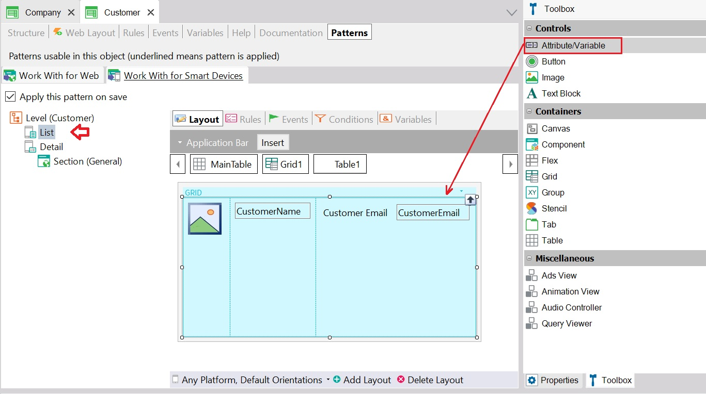
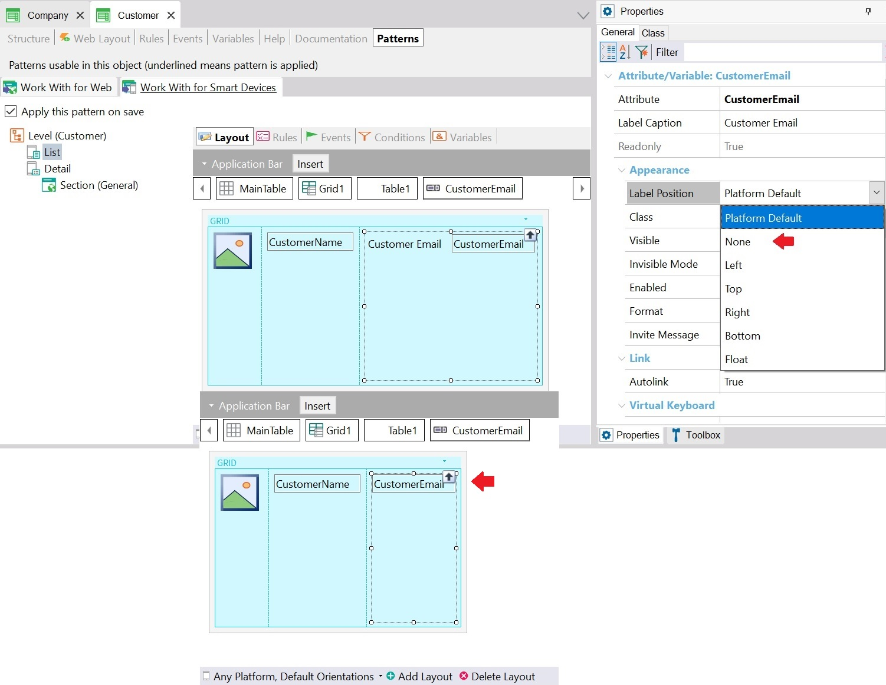
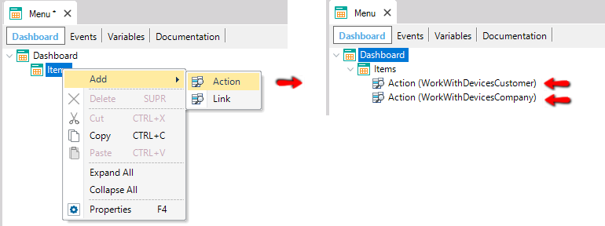

My first Android application
This document is a step-by-step explanation of how to create a simple Android application with GeneXus using .NET and SQLServer. If you are using another generator (Java) or DBMS, the steps are the same even though the prerequisites change.
Before starting the following steps, please check that the Android Requirements are correctly installed. See Android platform for more information.
After following this step-by-step guide, the following application should be obtained:
Then, it can be improved for a great look & feel.
Step 1
Create a New - Knowledge Base and select .NET Core Environment as Prototyping Environment (you can select also Java).
Step 2
Create the Customer and Company Transaction objects with the following structures:

Note the Domains with Special Semantics in Phone, Email, Address attributes.
Now, autonumber the identifier attributes. While positioned in the CustomerId field, press F4 to see its properties. Then, change the Autonumber property to True. Do the same for the CompanyId attribute.
Step 3
Apply Work With for Smart Devices pattern to both transactions. To do so, open each transaction, click on the Patterns selector, choose the Work With for Smart Devices tab, and select the checkbox as shown below. Next, click on Save:

From the Toolbox, drag & drop the control Attribute/variable to insert the attributes you want to see on the Customer list screen (i.e. CustomerEmail):

To remove the attribute label, change the Label position property value to "None":

Step 4
Create a Menu object called, for example, Menu.

This object is like a menu; you can use it to add items/actions to it, in order to call the Work With objects created in the previous step. To do so, right-click on the Items option and add two actions consecutively to the dashboard. Each action must be associated with each Work With. You will be able to select the WorkWithDevicesCustomer in the Select Object dialog for the first action and the WorkWithDevicesCompany for the second action:

When you select a WorkWithDevices <TransactionName> object, the Event associated with this action will be generated automatically:
Event 'WorkWithDevicesCustomer'
WorkWithDevicesCustomer.Customer.List()
EndEvent
Event 'WorkWithDevicesCompany'
WorkWithDevicesCompany.Company.List()
EndEvent
Step 5
Edit the SmartDevices Generator Preferences. Make sure you have set the following properties:
- Generate Android: True
- Main Platform: Android (default)
- Android SDK directory: Select your Android SDK directory (that is: the directory where you have installed the program)
- JDK Directory: Select your JDK directory.
With these settings, the Android and iOS code will be generated, and at runtime, the Android platform application will be executed.
Step 6
Before pressing F5 to build and run the application, you have to Set as Startup Object a Main SD object. Dashboards by default are Main (their Main Object property is set to True by default), so set the Menu as Startup Object:
Next, press F5. The first time you do it, GeneXus needs to know the database connection information.
The other possibility is to deploy to cloud.
The following output is shown, as well as the Impact Analysis report, indicating the tables that must be created in the database. Click on the Create button to create them.

Then, GeneXus automatically runs the Android Emulator:
so you are ready to test it!
Tap on the Work With Devices Customer option. The following screen will be displayed:
Continue testing the application by inserting data, updating, deleting, searching, filtering, adding companies, etc.
Some Pics
Enjoy it!
Note
To display the desired image for each menu action, go to the dashboard object created in step 4. Then, being positioned on each action, associate the image (inserting it simultaneously in the KB) through the properties dialog:

Tips
- To simplify the prototyping process, we recommend not closing the emulator between runs.
Download the XPZ
To import GeneXus objects used in this demo, right on your KB, download the following file: My First Smart Device Application.
See also
- My first iOS application
- A more attractive sample: LightCRM
For more information check Apple - FAQ and Common Issues